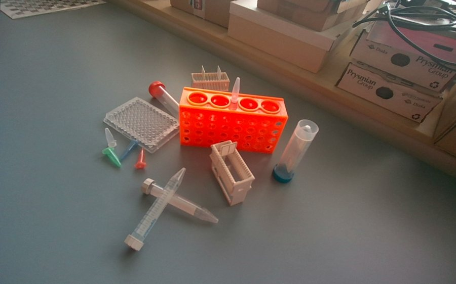

Overview
The rapid preparation of accurately annotated real-world training data remains a major bottleneck in the development of learning-based robotic perception systems. Label Factory converts a short multi-view RGB-D recording of a static scene into training-ready datasets. Given metric 3D models of the objects, it combines metric scene reconstruction with zero-shot 6DoF object pose estimation to establish a persistent scene-level representation, without object-specific network training or frame-wise manual annotation.
Pose hypotheses from selected frames are transformed into the reconstructed metric frame and robustly consolidated across viewpoints. The resulting object configuration and camera trajectory are then used to generate geometrically consistent annotations for the whole registered sequence, including frames that the pose estimator never processed. One acquisition provides training data for depth estimation, instance segmentation and classification, and 6DoF object pose estimation.
How it works
The animation steps through the pipeline. Click a box or use the buttons to jump to a step; the images are real results of one labware scene.

Results
Annotation accuracy on the 12 test sequences of the BOP19 YCB-Video benchmark (4,123 target instances, 21 object categories). The CAD models are given; no ground-truth pose is used.
| Further metrics | Label Factory |
|---|---|
| BOP AR, MSSD | 93.6 |
| BOP AR, MSPD | 88.4 |
| Median ADD-S error | 2.6 mm |
The accuracy is lowest for two nearly rotationally symmetric objects, the master chef can and the tuna fish can, whose orientation is determined only by their printed label.
Processing time
A scene of 250 RGB-D frames takes 30.1 ± 3.6 min on a laptop workstation (NVIDIA RTX 2000 Ada with 8 GB, Intel Core i5-13600HX, 32 GB RAM), measured over 20 recorded scenes. The SAM-6D stage accounts for 59 % of the time.
Consolidated poses on 6 + 6 scenes
Final annotations rendered from the consolidated object poses, shown on six hand-tool scenes and six labware scenes at the same time. Every scene is a 250-frame recording; the colored masks and labels are the instances of the consolidated scene projected into each frame.
Datasets
The datasets recorded with the framework, hand tools and labware items with ten scenes each, are published on the ABC-iRobotics Hugging Face page (Hand tools, Labware items). Each provides the configurations depth_estimation, instance_segmentation, object_pose_estimation and object_pose_models.
from datasets import load_dataset
poses = load_dataset("ABC-iRobotics/Hand_Tools", "object_pose_estimation")Get started
git clone https://github.com/ABC-iRobotics/Label_Factory.git
cd Label_Factory
# place the SAM-6D checkpoints in checkpoints/ (see the README)
docker compose build
docker compose up # user interface on http://localhost:8501Installation, the command-line workflow and the evaluation scripts are described in the README and the documentation (installation, user interface guide, command line).
Citation
The paper describing Label Factory is in progress. The citation will be added here after publication.